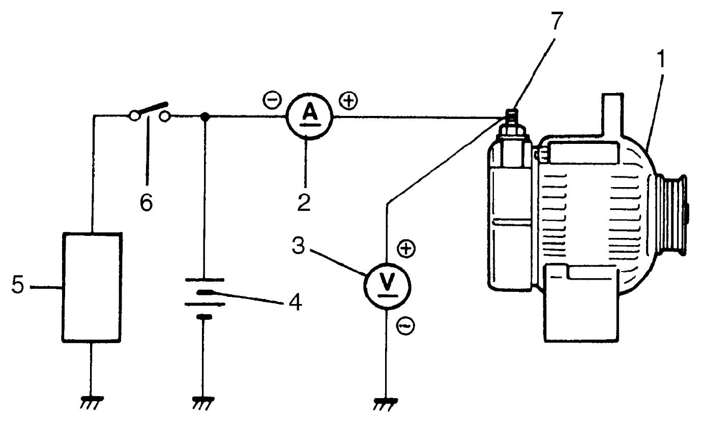

1J
| Generator Test |
This condition, as evidenced by slow cranking or low specific gravity, can be caused by one or more of the following conditions even though warning light operates normally. The following procedure also applies to cars with voltmeter and ammeter.
•Check that undercharged condition has not been caused by accessories being left on for an extended period.
•Check generator drive belt for wear and tension.
•If battery defect is suspected, refer to Battery Description:M16A.
•Check wiring for defects. Check all connections for tightness and cleanliness, battery cable connections at battery, starting motor and ignition ground cable.
•Check generator drive belt for wear and tension.
•If battery defect is suspected, refer to Battery Description:M16A.
•Check wiring for defects. Check all connections for tightness and cleanliness, battery cable connections at battery, starting motor and ignition ground cable.
No-Load Check
NOTE:
Use fully charged battery.
1)Check for DTC.
If there is any DTC, perform troubleshooting for applicable DTC and then clear DTC.
If there is any DTC, perform troubleshooting for applicable DTC and then clear DTC.
•Troubleshooting:
•DTC clearance:
•DTC clearance:
2)Turn off all electrical loads (5).
3)Connect voltmeter (3) and ammeter (2) as shown in figure.
4)Start engine and warm it up to normal operating temperature.


 "Expand image")
| 1. | Generator | 6. | Switch |
| 4. | Battery | 7. | “B” terminal |
5)Run engine around 2,000 rpm and read meters.
•If voltage is higher than standard value, check ground circuit of brushes.
If brushes are not grounded, replace IC regulator.
•If voltage is lower than standard value, check rotor, stator, rectifier, bushings and regulator.
If brushes are not grounded, replace IC regulator.
•If voltage is lower than standard value, check rotor, stator, rectifier, bushings and regulator.
Specification for undercharged battery (No-load check)
Current: 10.2 A
Regulated voltage: 14.2 – 14.8 V (at 25 °C, 77 °F)
Load Check
NOTE:
Use fully charged battery.
1)Connect ammeter in the same way as No-Load Check.
2)Run engine around 2,000 rpm and turn on the following electrical loads.
•Headlight (high beam)
•Rear window defogger
•Blower motor (maximum speed)
•Rear window defogger
•Blower motor (maximum speed)
3)Read ammeter.
If meter reading is lower than specified value, repair or replace generator.
If meter reading is lower than specified value, repair or replace generator.
Specification for undercharged battery (Load check)
Less than 20 A